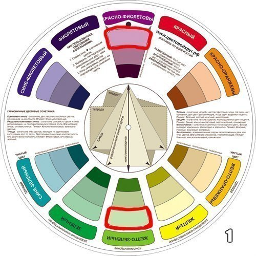
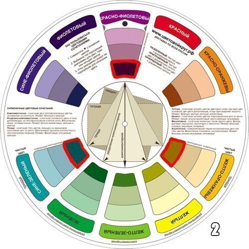
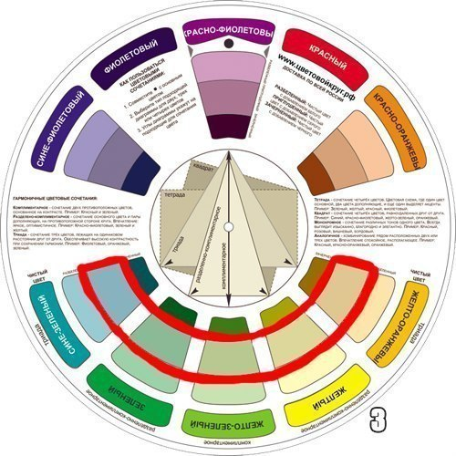
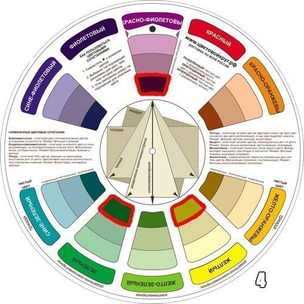
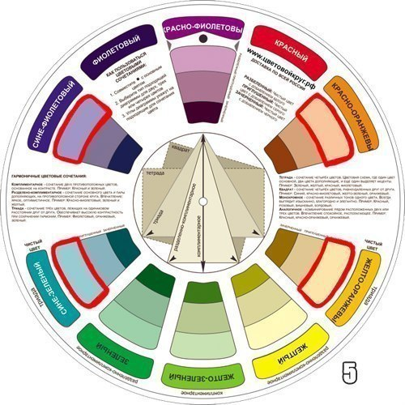
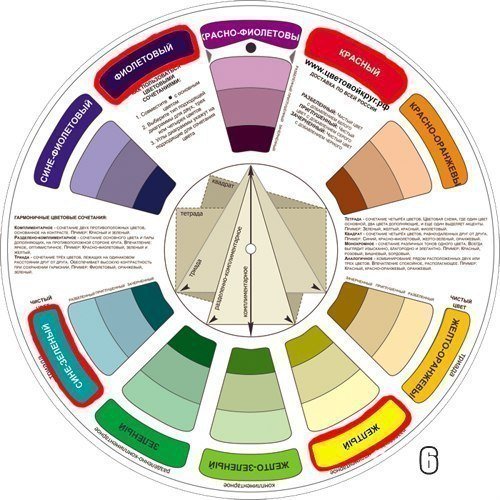

СХЕМА №1. Комплиментарное сочетание
Комплиментарными, или дополнительными, контрастными, являются цвета, расположенные на противоположных сторонах цветового круга Иттена. Выглядит их сочетание очень живо и энергично, особенно при максимальной насыщенности цвета.
СХЕМА №2. Триада
Сочетание трёх цветов, лежащих на одинаковом расстоянии друг от друга. Обеспечивает высокую контрастность при сохранении гармонии. Такая композиция выглядит достаточно живой даже при использовании бледных и ненасыщенных цветов.
СХЕМА №3. Аналогичное сочетание(Analogous)– сочетание от двух до пяти цветов расположенных рядом друг с другом на цветовом круге (в идеале 2-3 цвета). Впечатление: спокойное располагающее. Пример сочетания аналогичных приглушенных цветов Желто-оранжевый/Жёлтый/Жёлто-Зелёный/Зелёный/Сине-Зелёный.
СХЕМА №4. Раздельно-комплиментарное сочетание
Вариант комплиментарного сочетания цветов, только вместо противоположного цвета используются соседние для него цвета. Сочетание основного цвета и двух дополнительных. Выглядит эта схема почти настолько же контрастно, но не настолько напряженно. Если вы не уверены, что сможете правильно использовать комплиментарные сочетания – используйте раздельно-комплиментарные.
СХЕМА №5. Тетрада – Сочетание четырёх цветов. Цветовая схема, где один цвет основной, два дополняющие, в еще один выделяет акценты. Пример: сине-зеленый, сине-фиолетовый, красно-оранжевый, желто-оранжевый
СХЕМА №6. Квадрат – Сочетание четырёх цветов, равноудалённых друг от друга. Пример: Фиолетовый, красно-оранжевый, жёлтый, сине-зеленый. Внимание: На схеме НЕ правильно выделен КРАСНЫЙ цвет. Правильно вместо него - красно-оранжевый
1. Белый: сочетается со всем. Наилучшее сочетание с синим, красным и черным.
2. Бежевый: с голубым, коричневым, изумрудным, черным, красным, белым.
3. Серый – базовый цвет, хорошо сочетается с капризными цветами: фуксия, красный, фиолетовый, розовый, синий.
4. Розовый – с коричневым, белым, цветом зеленой мяты, оливковым, серым, бирюзовым, нежно – голубым.
5. Фуксия (темно – розовый) – с серым, желто-коричневым, зеленым лаймом, зеленой мятой, коричневый.
6. Красный – подходит к желтым, белым, бурым, зеленым, синим и черным.
7. Томатно – красный: голубой, зеленая мята, песчаный, сливочно – белый, серый.
8. Вишнево-красный: лазурный, серый, светло-оранжевый, песчаный, бледно-желтый, бежевый.
9. Малиново-красный: белый, черный, цвет дамасской розы.
10. Коричневый: ярко-голубой, кремовый, розовый, палевый, зеленый, бежевый.
11. Светло-коричневый: бледно-желтый, кремово-белый, синий, зеленый, пурпурный, красный.
12. Темно-коричневый: лимонно-желтый, голубой, зеленая мята, пурпурно-розовый, зеленый лайм.
13. Рыжевато-коричневый: розовый, темно-коричневый, синий, зеленый, пурпурный.
14. Оранжевый: голубой, синий, лиловый, фиолетовый, белый, черный.
15. Светло – оранжевый: серый, коричневый, оливковый.
16. Темно –оранжевый: бледно – желтый, оливковый, коричневый, вишнёвый.
17. Желтый: синий, лиловый, светло-голубой, фиолетовый, серый, черный.
18. Лимонно-желтый: вишнево-красный, коричневый, синий, серый.
19. Бледно-желтый: фуксия, серый, коричневый, оттенки красного, желтовато-коричневый, синий, пурпурный.
20. Золотисто-желтый: серый, коричневый, лазурный, красный, черный.
21. Оливковый: апельсиновый, светло-коричневый, коричневый.
22. Зеленый: золотисто-коричневый, оранжевый, салатный, желтый, коричневый, серый, кремовый, черный, сливочно-белый.
23. Салатовый цвет: коричневый, желтовато-коричневый, палевый, серый, темно-синий, красный, серый.
24. Бирюзовый: фуксия, вишнево-красный, желтый, коричневый, кремовый, темно-фиолетовый.
25. Электрик красив с золотисто-желтым, коричневым, светло-коричневым, серым или серебряным.
26. Голубой: красный, серый, коричневый, оранжевый, розовый, белый, желтый.
27. Темно-синий: светло-лиловый, голубой, желтовато-зеленый, коричневый, серый, бледно-желтый, оранжевый, зеленый, красный, белый.
28. Лиловый: оранжевый, розовый, темно-фиолетовый, оливковый, серый, желтый, белый.
29. Темно-фиолетовый: золотисто-коричневый, бледно-желтый, серый, бирюзовый, зеленая мята, светло-оранжевый.
30. Черный универсален, элегантен, смотрится во всех сочетаниях, лучше всего с оранжевым, розовым, салатным, белым, красным, сиреневатым или желтым.





